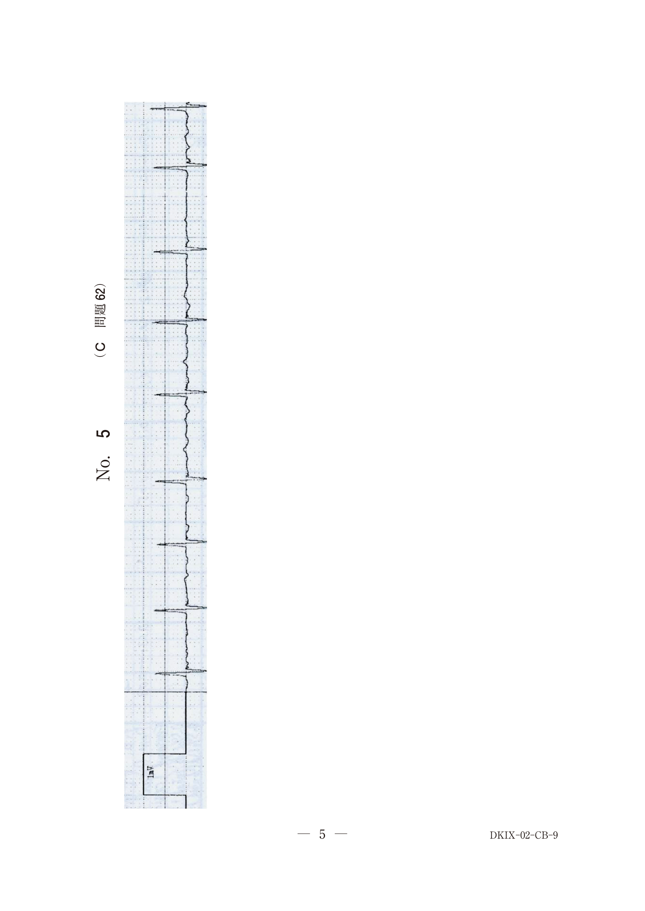
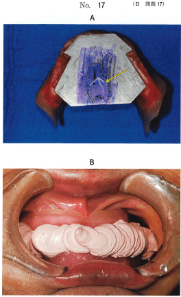
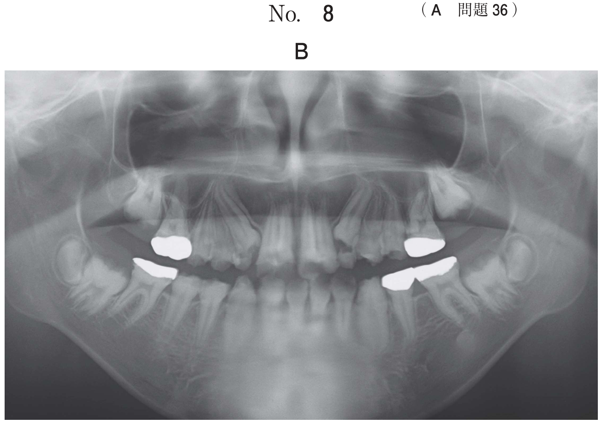
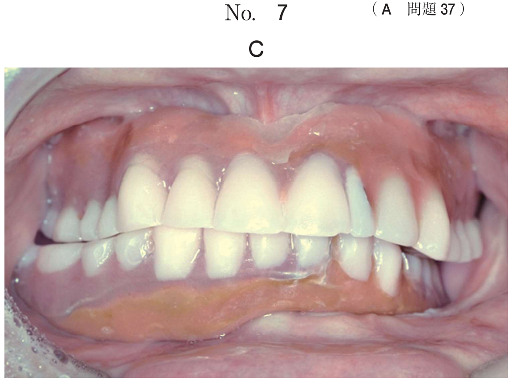

咬合器とは、上下顎模型の位置関係を生体の顎間関係と同じく再現する目的で用いる装置である。咬合器の基本的な機能は咬頭嵌合位の再現であるが、全部床義歯の製作には咬頭嵌合位付近の偏心位を再現する咬合器がよい。
| 種類 | 調節可能な要素 | 代表的な咬合器 |
|---|---|---|
| 平均値咬合器 | 調節機構なし（平均的な下顎運動のみ再現） | 松風ハンディーⅡA、ギージー・シンプレックス |
| 半調節性咬合器 | 矢状顆路傾斜角、側方顆路角（Bennett角）、矢状切歯路傾斜角 | ディナー・MarkⅡ、ハノウ・ユニバーシティー |
| 全調節性咬合器 | すべての要素（作業側顆路含む） | TMJ咬合器、スチュアート咬合器 |
| 種類 | 特徴 |
|---|---|
| アルコン型 | 顆路指導機構が上顎部、顆頭球が下顎部（生体と同じ配置） |
| コンダイラー型 | 顆頭球が上顎部、顆路指導機構が下顎部（生体と逆） |
| 種類 | 特徴 |
|---|---|
| スロット型 | 顆路を直線もしくは曲線状のスロット（溝）で表現 |
| ボックス型 | 顆頭球が上壁・内壁・後壁の3枚の壁で構成される箱の中で移動 |
| 項目 | 平均値 |
|---|---|
| Bonwill三角 | 1辺 10cm（左右顆頭点と下顎切歯点を結ぶ正三角形） |
| Balkwill角 | 20°（Bonwill三角と咬合平面のなす角） |
| 矢状顆路傾斜角 | 30〜40° |
| 側方顆路角（Bennett角） | 15° |
チェックバイト法は、前方または側方運動時に下顎頭が前下方に移動することにより生じるクリステンセン現象を利用して、半調節性咬合器の矢状顆路傾斜角と側方顆路角の調節を行う方法である。
| チェックバイト | 調節する顆路 |
|---|---|
| 前方チェックバイト | 両側の矢状顆路傾斜角 |
| 右側方チェックバイト | 左側（平衡側）の側方顆路角 |
| 左側方チェックバイト | 右側（平衡側）の側方顆路角 |
注意：側方チェックバイトでは、作業側ではなく平衡側（非作業側）の顆路を調節する。
咬合器の写真（別冊No.9）を別に示す。
調節するのはどれか。2つ選べ。

【解説】半調節性咬合器で調節できるのはBennett角（側方顆路角）と矢状顆路傾斜角。Balkwill角とBonwill三角は平均値として固定されている。Fischer角は側方運動時の切歯路角。
チェックバイト記録からわかるのはどれか。2つ選べ。
【解説】チェックバイト記録からは顆路傾斜角（矢状顆路傾斜角・側方顆路角）と咬合状態がわかる。筋活動量や咬合力の測定には専用の機器が必要。
72歳の男性。上下顎全部床義歯の製作を希望して来院した。全部床義歯製作中の検査結果の写真（別冊No.17A）を別に示す。検査後、矢印で示す位置における顎間関係記録を採得した。顎間関係記録採得時の写真（別冊No.17B）を別に示す。
この記録を用いて咬合器上で調節するのはどれか。1つ選べ。

【解説】左側方チェックバイトでは右側（平衡側）の側方顆路角を調節する。側方運動では平衡側顆頭が大きく移動するため。
咬合挙上が必要な症例の歯列模型を咬合器に装着し、挙上量を検討することとした。2種類の咬合器の写真（別冊No.17A、B）を別に示す。
咬合器上で咬合挙上した場合、咬合器間で差が生じるのはどれか。1つ選べ。

【解説】アルコン型とコンダイラー型では咬合挙上時に矢状顆路傾斜角に差が生じる。アルコン型は咬合器を開口しても顆路傾斜は不変だが、コンダイラー型では変化が生じる。
65歳の男性。右側顎関節部の疼痛を主訴として来院した。5年前から関節リウマチの治療を受けているという。下顎に設置した描記板上にゴシックアーチを描記した後、赤の咬合紙を用いてタッピング運動を印記した写真（別冊No.17）を別に示す。
ゴシックアーチ描記法の評価で正しいのはどれか。1つ選べ。

【解説】ゴシックアーチで右側への側方運動路が短い場合、左側方運動の制限が疑われる。これは右側下顎頭の運動制限を示唆する。関節リウマチによる顎関節障害の可能性がある。